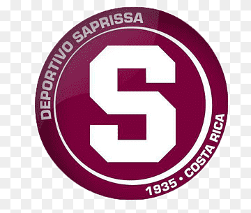
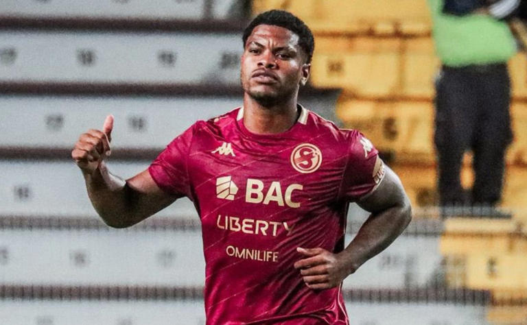

Hablando de Saprissa📅 29 Mayo 2026
Por Carlos José Villanueva Ramos

¡Buenas noticias para la afición morada! El Deportivo Saprissa confirmó que el delantero panameño Newton Williams extendió su préstamo con la institución por dos torneos cortos más.
Williams llegó al club antes del Torneo de Apertura 2025 y desde el primer momento se ganó el corazón de los saprissistas. Uno de sus momentos más recordados fue en la Copa Centroamericana ante Cartaginés, donde en solo 15 minutos sobre el terreno de juego anotó un gol que enamoró a la afición.
El atacante nacido en enero de 2001 llega con un currículum internacional impresionante — ha jugado en Palmeiras de Brasil, Hapoel Ra'anana de Israel, 9 de Octubre de Ecuador y Antigua GFC de Guatemala. Además ha representado a las selecciones menores de Panamá.
La gran noticia es que Williams está completamente recuperado de la lesión de rodilla que sufrió el año anterior y estará listo para el próximo campeonato con el Primer Equipo. ¡Bienvenido de vuelta Newton! 💜🇵🇦
← Volver al Blog Morado